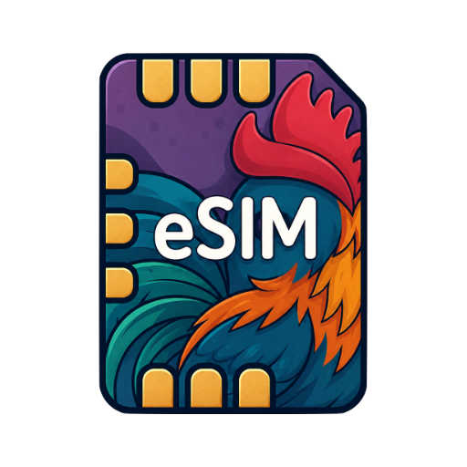

<div align="center">

  

  # eSIM Express

  **Instant connectivity worldwide, right at your fingertips.**

  [](https://esim.rostercal.click)
  [](https://supabase.com)
  [](https://tailwindcss.com)

</div>

---

## ✨ Overview

**eSIM Express** is designed to make mobile data access simple, fast, and effortless. Whether traveling abroad or managing data packages for others, the app delivers a smooth experience with real-time status updates, instant QR code delivery, and customizable data plans.

---

## 🌟 Key Features

### ✈️ For Travelers & Users

* **Global Coverage:** Choose from popular destinations like **Europe**, **USA**, **Japan**, **Asia**, **Global**, or search for custom countries.
* **Tailored Plans:**
  * **Total Data Plans:** Flexible overall data allowances.
  * **Daily Plans:** High-speed daily data caps with configurable duration (1–30 days).
* **Personal eSIM Wallet:** Store all active and past eSIMs in one place.
* **One-Tap Installation:** View and scan installation QR codes directly from your digital wallet.
* **Usage Tracking:** Easily mark eSIMs as *Used* or *Ready* to stay organized on the go.
* **Monthly Billing Summaries:** Keep track of your monthly requests and total cost.

### 🛡️ For Admins & Operators

* **Request Inbox:** Real-time stream of incoming eSIM requests from users.
* **Quick Fulfillment:** Approve requests, attach QR installation links, and set custom prices in AED.
* **Gift eSIMs:** Send complimentary eSIM data plans directly to specific user accounts.
* **Database & History:** Complete audit trail of processed orders with quick editing and management options.
* **Revenue Analytics:** Monthly breakdown of revenue per user.

---

## 🎨 Highlights & User Experience

| Feature | Highlight |
| :--- | :--- |
| **🎨 Modern Aesthetics** | Dark/light contrast with glassmorphism overlays and responsive mobile-first navigation. |
| **🔔 Instant Push Alerts** | Receive background push notifications when your eSIM is ready to install or when a new request arrives. |
| **📱 PWA Enabled** | Installable directly to your phone’s home screen like a native iOS or Android app using `esimapp.png`. |
| **⚡ Real-Time Sync** | Requests and status changes reflect instantly across user and admin dashboards without refreshing. |

---

## 🚀 Quick Start

Getting the app running locally or hosting it on any static web host is simple:

1. **Clone the repository:**
   ```bash
   git clone https://github.com/your-username/esim-app.git
   cd esim-app
   ```

2. **Open in Browser:**
   Simply open `index.html` in your web browser or serve it using any web server:
   ```bash
   # Example using Python
   python -m http.server 8000
   ```

3. **Deploy:**
   Since it's a lightweight, serverless web app, you can deploy it directly on **Vercel**, **Netlify**, **GitHub Pages**, or your custom domain.
